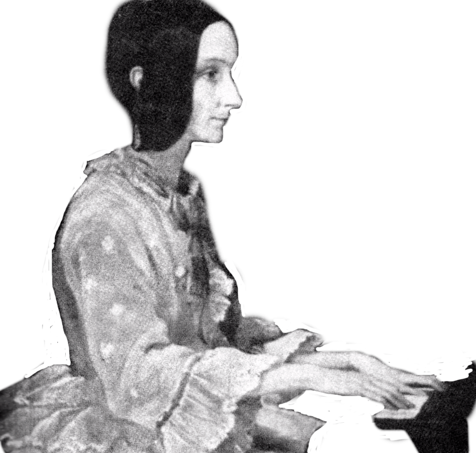

Augusta Ada Byron nació en Londres el 10 de diciembre de 1815, sus padres son: imágenes con sus nombres y profesión y estudios.

“Después que Byron y Anna se casaron y tuvieron a Ada, Byron le engañó con otra mujer”


Ada enfermó y quedo paralizada de las piernas por 3 años de sarampión a los 13 años. Esta enfermedad la dejó paralizada de las piernas por 3 años. Durante ese tiempo se dedicó a estudiar a las aves y la proporción de sus alas, quería construir un aparato con el cual pudiera volar.
Gracias al apoyo de su madre Anna quien hizo que su hija llevara una educación muy elevada como la suya. Lo que llevo a ada a su interes por el mundo de la ciencia.
Ada conoce a Babbage a los 17 años en una fiesta conoce a Babbage.
Entusiasmada por sus proyectos e ideas, Ada empieza a trabajar junto con Babbage.

Ada es cortejada por William King a los 20 años, un estudiante de ciencias que luego sería conde de Lovelace, se casa con él y tiene 3 hijos.
A los 27 años realizó su único trabajo profesional. La traducción de un artículo en francés en el cual describe la máquina analítica de Babbage.
Añadiendo en el mismo el primer algoritmo en la historia, el cual ayudaría a la máquina a procesar números con más facilidad.
Ada Lovelace aportó con el concepto de máquina universal, un artefacto que pudiera programarse y reprogramarse realizando diferentes tareas.
¿Te imaginas un computador que funcione a vapor y tarjetas perforadas? nunca lo sabremos porque Ada fue rechazada por Babbage de poder trabajar como socios…

Ada Lovelage muere a los 36 años con cáncer de útero. Fue enterrada a lado de la tumba de su padre
La clarividencia de Ada en cuanto a la informática, tener la visión de una computadora y su cautela a la hora de trazar sus límites fue lo que la llevaron a tener éxito en esa época, volviéndola inolvidable en un futuro por sus aportaciones.